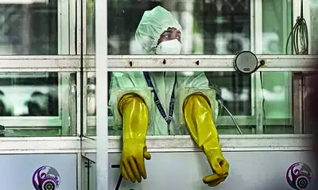
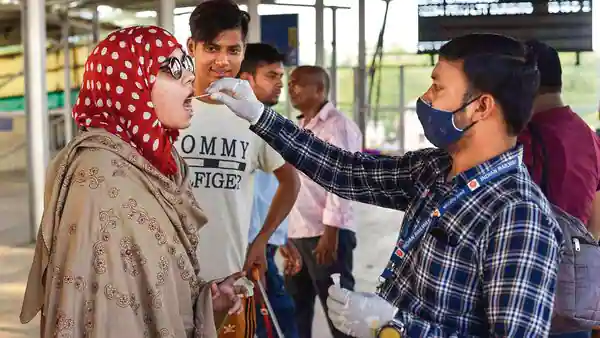
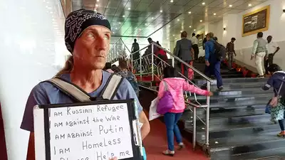
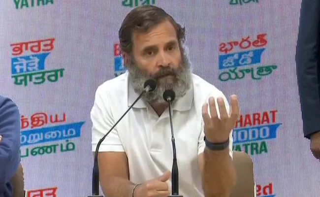
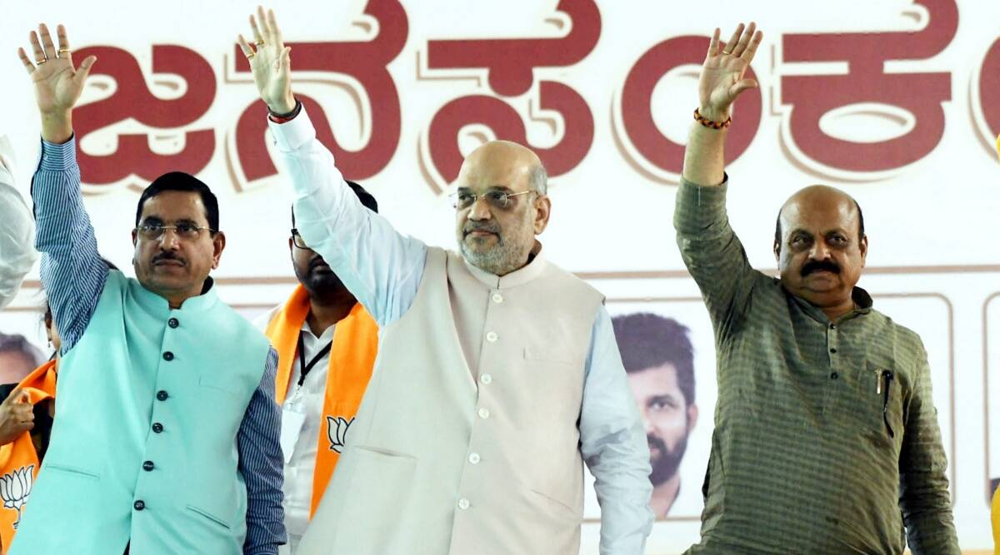

India Abstains On UN Resolution Regarding 'Violation' Of Palestinian Rights
India Abstains On UN Resolution Regarding 'Violation' Of Palestinian Rights The US and Israel voted against the resolution. (representational) United Nations: India has abstained in the UN General Assembly on a resolution that asked the International Court of Justice for its opinion on the legal consequences of Israel's "prolonged occupation" and annexation of the Palestinian territory. The draft resolution 'Israeli practices affecting the human rights of the Palestinian people in the Occupied Palestinian Territory, including East Jerusalem' was adopted by a recorded vote on Friday, with 87 votes in favour, 26 against, and 53 abstentions, including by India. The resolution decided to request the UN's highest judicial body to "render an advisory opinion" on "what are the legal consequences arising from the ongoing violation by Israel of the right of the Palestinian people to self-determination, from its prolonged occupation, settlement and annexation of the Palestinian territory occupied since 1967, including measures aimed at altering the demographic composition, character and status of the Holy City of Jerusalem, and from its adoption of related discriminatory legislation and measures." It also asked the Hague-based top UN court, "how do the policies and practices of Israel... affect the legal status of the occupation, and what are the legal consequences that arise for all States and the United Nations from this status?" The US and Israel voted against the resolution, while Brazil, Japan, Myanmar, and France were among those that abstained.
Before the vote, Israel's Ambassador to the United Nations, Gilad Erdan, said that the "outrageous resolution" calling for the advisory opinion of the International Court of Justice is a "moral stain on the UN and every country that supports it. No international body can decide that the Jewish people are "occupiers" in their own homeland. Any decision from a judicial body which receives its mandate from the morally bankrupt and politicised UN is completely illegitimate." Mr Erdan added that the decision to hold a vote that deals with Israel on Shabbat is another example of the "moral decay" of the UN, which prevents Israel's position from being heard in a vote whose results are predetermined. He added that at the UN General Assembly High-Level Week in September 2021, Palestinian Authority President Mahmoud Abbas announced in his remarks that if Israel did not withdraw to the 1967 lines within a year, the Palestinians would turn to The Hague. "Today's vote is the realisation of Abbas's ultimatum," he said. Following the vote, World Jewish Congress President Ronald S Lauder said in a statement that the vote at the United Nations exemplifies an ongoing pattern of bias against Israel, and "we applaud those 26 countries, including the United States, who voted against this shameful resolution that seeks to isolate and demonise the Jewish state."Mr Lauder said the "measure is a direct outgrowth of the biased Commission of Inquiry on Israel, whose commissioners have made antisemitic comments and who have been unabashed critics of Israel. Referral of this issue to the ICJ is yet another barrier to dialogue between Israelis and Palestinians." Mr Lauder said peace in the region "can only be negotiated by the two sides directly involved." World Jewish Congress is an international organisation representing Jewish communities in more than 100 countries to governments, parliaments, and international organisations.
Note : This report is not edited or published by us.
Report Source :NDTV
India's 1st case of Omicron's XBB.1.5 variant in Gujarat: Insacog
PUNE: India has confirmed its first case of Omicron's XBB.1.5 in Gujarat this December, Insacog data showed. XBB.1.5 is a sub-variant that international scientists have flagged for being responsible for a surge in Covid cases and hospitalisations in New York. XBB itself is a recombinant of two different BA.2 sub-variants of Omicron. But its descendant, XBB.1.5, is believed to have a tighter bind to the ACE2 receptor, which would explain its higher level of transmissibility, according to US scientist Eric Topol. With the detection of the first XBB.1.5 case closer home, Maharashtra state public health authorities are now focused on not allowing the sub-variant to enter the state due to its proximity to Gujarat.
Dr Pradeep Awate, Maharashtra surveillance officer, told TOI, "We are keeping a watch on the genetic footprints of the virus. The state is carrying out 100% genomic sequencing, while international arrivals are also undergoing thermal screening and random sampling of 2% of these is also being done. Positive samples are then being sent for genome sequencing." Awate said, "We have more than 275 cases of XBB in Maharashtra. But XBB.1.5 is another offshoot and little is known about its transmissibility. But being an XBB descendant, it indicates that there is only a minor change in the original version of the sub variant. Still, we are taking necessary precautions to prevent its entry/spread in the state."
Dr Awate said the way a sub-variant might be behaving in the US could be different from its implications in India due to factors such as immunity and ethnicity. Maharashtra's coordinator for genome sequencing, Dr Rajesh Karyakarte, said XBB.1.5 has not been detected in the state so far. He said, "In the US, a descendant of XBB - XBB.1.5 - is replacing the previously dominating BQ.1 and BQ.1.1 sub-lineages. Currently, XBB.1.5 is growing in New York ahead of others. We have already seen in Maharashtra that XBB is the most dominant variant and has not allowed BA.5 and its sub-lineages, like BQ.1, to dominate." He said, "XBB has greater immune evasiveness than others and it is adding more mutations like XBB.1.5. It is doing this to infect more people after immunity levels in the population have been rising from recurrent past infections/vaccine shots." Virologist Dr Shahid Jameel said multiple variants over the past one year were all Omicron descendants. "Unless there is a completely new variant lineage, we should not be worried. But we have to be vigilant. The reason is over 90% of adults in India have two doses of a vaccine, 30% have booster doses," he said.
Note : This report is not edited or published by us.
Report Source : Times Of India
Flying to India? New covid rules for international passengers from these countries kick in from 1 January 2023
New Delhi: The Ministry of Civil Aviation has issued revised Covid guidelines for passengers arriving in international flights, ahead of RT-PCR negative test report being made compulsory for travellers from six countries, including China and Thailand.
Vistara airline has informed the passengers about the new rules effective from Sunday. From January 1, 2023, a pre-departure RT-PCR negative test report will be mandatory for passengers coming in all international flights from China, Singapore, Hong Kong, the Republic of Korea, Thailand and Japan.
Air Suvidha portal self-declaration has been made operational for passengers travelling in all international flights from China, Singapore, Hong Kong, Republic of Korea, Thailand and Japan, with a provision to allow these international travellers arriving in India to upload negative RT-PCR test reports as well as to submit self-declaration form," it said. RT-PCR testing should have been done 72 hours prior to undertaking the journey. The current practice of random testing of 2 per cent of arriving passengers in each international flight will also continue. World Health Organization (WHO) Director-General Tedros Adhanom Ghebreyesus has said that the global body remains concerned over the evolving situation in China as the COVID-19 infections witness a new spike in the country after curbs were eased.
Note : This report is not edited or published by us.
Report Source : LiveMint
Another Russian critical of Putin goes missing in Odisha
BHUBANESWAR: Facing criticism for a shoddy probe into the mystery deaths of two Russians in Odisha's Rayagada district, including a legislator who was a Putin critic, the state police went into a tizzy on Friday after another Russian disappeared from Bhubaneswar railway station on Friday after he was spotted with a placard that said he needed help and was against Putin's war against . "I am a Russian refugee. I am against war and against Putin. I am homeless. Please help me," said the placard carried by the Russian passport holder, who is in his 60s. He was spotted by passengers at a platform. However, he became incommunicado when the police reached the spot. "Some passengers clicked photos of the Russian man at the railway station. We have his photos and are trying to locate him," said Jayadev Biswajit, the inspector in charge of Government Railway Police station, Bhubaneswar

"I had inquired about him while he was loitering on the platform carrying a similar placard some time back. I had inspected his passport and visa, which were valid," Biswajit said. As the foreigner was not conversant in English, Biswajit said he could not gather much detail. "I could understand that he was homeless and did not have any money. I advised him to approach the night shelter run by the Bhubaneswar municipal corporation here where he can get food. But he was reluctant," the inspector said. The commissionerate police said they would verify his details even though the foreigner was spotted in GRP jurisdiction. "We will check from our database and inquire about the foreigner from local hotels," Bhubaneswar DCP Prateek Singh said.
Note : This report is not edited or published by us.
Report Source :Times Of India
"What About Their Roadshows?": Rahul Gandhi On Security Red Flags

"I would like to thank the RSS and the BJP for their criticism, it helps us become stronger. They are my gurus, they constantly remind me what should not be done," he added. New Delhi: Congress MP Rahul Gandhi, who is on a pan-India foot march, 'Bharat Jodo Yatra', today said that the BJP-led government is trying to 'build a case' against him without reason by getting security forces to say he is repeatedly violating security protocol during the Yatra, and sending letters asking him to stop due to Covid concerns. He also pointed to BJP's roadshows, asking how those are not violations of Covid protocols. "The Home Ministry says you go in a bulletproof vehicle. How can I do that? I have to walk on foot for the Yatra...they know what needs to be done for security, they are marking an issue," he added.
Congress had earlier, responding to Union Health Minister Mansukh Mandaviya's letter to Rahul Gandhi over Covid concerns, said that the BJP was trying to stop it "by any means necessary" because of its popularity, and appealed to the BJP to stop using the pandemic for 'petty politics'. 'What About Their Roadshows?': Rahul Gandhi On Security Red Flags New Delhi: Congress MP Rahul Gandhi, who is on a pan-India foot march, 'Bharat Jodo Yatra', today said that the BJP-led government is trying to 'build a case' against him without reason by getting security forces to say he is repeatedly violating security protocol during the Yatra, and sending letters asking him to stop due to Covid concerns. He also pointed to BJP's roadshows, asking how those are not violations of Covid protocols. "The Home Ministry says you go in a bulletproof vehicle. How can I do that? I have to walk on foot for the Yatra...they know what needs to be done for security, they are marking an issue," he added. Congress had earlier, responding to Union Health Minister Mansukh Mandaviya's letter to Rahul Gandhi over Covid concerns, said that the BJP was trying to stop it "by any means necessary" because of its popularity, and appealed to the BJP to stop using the pandemic for 'petty politics'. Rahul Gandhi also called for opposition unity against the BJP, saying there's "a huge undercurrent against BJP". The opposition has to coordinate effectively on alternative vision to the BJP, he added. To questions on broader support for his Yatra, he said "every opposition leader" is with the Congress in Bharat Jodo Yatra. "But I understand there are some political compulsions," he said. Rahul Gandhi also spoke of mutual respect between opposition leaders, and claimed it will be the Congress' endeavour to make other opposition leaders comfortable. "The doors of Bharat Jodo Yatra are open for everyone, we are not going to stop anyone from joining us. Akhilesh ji, Mayawati ji and others want Mohabbat ka Hindustan (an India of love)," he said in an open invite to the other parties of the opposition ahead of the 2024 general elections.
Note : This report is not edited or published by us.
Report Source :NDTV
‘India is ATM of BJP; Amit Shah worthless’: JD(S), Cong slam Union Home Minister for remarks at Mandya rally
At a rally in Karnataka’s Mandya, Union Home Minister Amit Shah had described Congress and JD(S) as ‘communal, casteist and criminal’.
A day after Union Home Minister Amit Shah described the Congress and JD(S) as “communal, casteist and criminal” at a rally in Karnataka’s Mandya ahead of the upcoming Assembly polls, the Congress and JD(S) slammed his remarks on Saturday, saying it was not easy to fool the people of Mandya and the state. In a series of tweets, the JD(S) said that BJP would collapse in Mandya and advised Shah against being “overconfident” about his party’s prospects. “State BJP leaders and Union Home Minister Amit Shah have spoken about ATMs in Mandya…Shouldn’t they be ashamed to lie? Not only Karnataka, entire India has become the ATM of BJP. Is this a lie?” JD(S) asked.
This was in response to Shah’s remarks that when Congress came to power, it transformed the state as “an ATM for Delhi and when JD(S) comes to power, it will become an ATM of a family”. Shah was referring to the Congress and the Gandhi family and the Deve Gowda family of JD(S). Referring to allegations of 40 per cent commission made by contractors in Karnataka, JD(S) asked, to which ATM had the 40 per cent commission gone? “Whose ATM did the PSI scam fill? The money looted during Covid deaths filled whose coffers? Which ATM was used to fund Operation Lotus?” the JD(S) tweeted. The only progress made by BJP, which came to power in Karnataka after toppling the H D Kumaraswamy government, was in taking commissions and buying MLAs, the JD(S) said. “BJP means a national team of ATMs,” the party added Meanwhile, the Karnataka Congress alleged that while the PM Modi-Amit Shah pair was missing in action when Karnataka was facing problems, they were now eager to visit the state, a clear sign that showed they are only concerned about elections. “It is impossible for the people of the state to heed the words of a worthless person,” the Karnataka Congress said in a tweet, adding that people would reject the BJP, irrespective of its tactics. The Congress also took a dig at Shah, saying he had failed to sort out the border dispute between Karnataka and Maharashtra.
Note : This report is not edited or published by us.
Report Source : indiannewsexpress
Rahul Gandhi on Akhilesh, Mayawati: 'I know that...rishta toh hai'
Rahul Gandhi said he won't comment on Akhilesh Yadav's Bharat Jodo remark. "Akhilesh ji, Mayawati ji and others want mohabbat ka Hindustan and there is some relation of ideology between us," Rahul Gandhi said.

Congress leader Rahul Gandhi on Saturday said there is a connection with Akhilesh Yadav and Mayawati in the journey against hatred. Bharat Jodo Yatra is open to all, Rahul Gandhi said adding that he won't comment on who will be joining and not. "Hatred and love are diametrically opposite...But many people want to spread love. I know Akhilesh ji and Mayawati ji don't want hatred. Rishta toh hai..."
The comment comes as Akhilesh Yadav recently said he will not join the yatra as the Congress and the BJP are the same. "Everyone knows that BJP and Congress are not the same. Because had it been the case, then Narendra Modi would not have wanted a Congress-mukt Bharat. Is he then asking for a BJP-mukt Bharat. But Akhilesh ji has the freedom to say what he feels," Rahul Gandhi said. "If you see Samajwadi Party, they don't have a national framework. They have a positioning in UP which they have to defend and for that, he may not come to the yatra. But the ideals of Samajwadi Party will not work in Kerala, Karnataka and Bihar. Our work is to provide a national framework to the opposition," Rahul Gandhi said adding that the role of the Congress is also to make sure that opposition parties feel comfortable and respected. “It should be mutual respect. They should respect us and we too,” Rahul Gandhi said.
Note : This report is not edited or published by us.
Report Source : Hindustan Times
India wants good neighbourly relations but..: Jaishankar's message to Pakistan, China
External affairs minister S Jaishankar said border challengers intensified during the Covid and India's relations with China are not normal now.

External affairs minister S Jaishankar on Friday sent a stern message to Pakistan and China as he interacted with the Indian community in Cyprus. India wants good neighbourly relations with everybody but that does not mean "excusing" terrorism, the foreign minister said in a veiled dig without naming Pakistan. On border issues with China, Jaishankar said India will never agree to any attempt to change the Line of Actual Control unilaterally. The statements come days after the Indian and the Chinese troops clashed in the Tawang sector of Arunachal Pradesh on December 9. The government said there was no casualty on the Indian side which gave a befitting reply to the Chinese troops. The issue of terrorism, on the other hand, saw India and Pakistan trading barbs at United Nations recently. "No country has suffered as much from terrorism as we have and we have been very clear that we will never accept it or normalise it. We will never allow terrorism to force us to the negotiation table. We want good neighbourly relations with everybody but that does not mean excusing or looking away or rationalising terrorism. That we are very clear," Jaishankar said in Cyprus.
"The second, of course, is our borders. The challenges intensified during the Covid period. And you all know that the state of our relations with China are not normal because we will not agree to any attempt to change the Line of Actual Control unilaterally," Jaishankar added. On the national security side, Jaishankar said the message that goes out from India is of firmness. "On diplomacy, I can say that at this time there is a lot of expectation from India as India is being seen today as a strong economy and one that will contribute to the problems. We are also seen as a country which is independent and has the courage to stand up. Also, a country which is able to bring very different countries which are not able to deal with each other," Jaishankar said.
Note : This report is not edited or published by us.
Report Source : Hindustan Times
In my Mother’s life story, I see the penance, sacrifice and contribution of India’s matrushakti: PM Modi
In June this year, PM wrote a blog on the occasion of his mother’s birthday, paying tribute to her remarkable life and indomitable spirit. Excerpts: Mother is not just any other word in the dictionary. It encompasses a whole range of emotions -- love, patience, trust, and a lot more. Across the world, irrespective of country or region, children have a special affection for their mothers. A mother not only gives birth to her children, but also shapes their mind, their personality, and their self confidence. And while doing so, mothers selflessly sacrifice their own personal needs and aspirations.

My Mother is as simple as she is extraordinary. Just like all mothers! As I write about my Mother, I am sure that many of you would relate to my description of her. While reading, you may even see your own mother’s image. My Mother was born in Visnagar in Mehsana in Gujarat, which is quite close to my hometown Vadnagar. She did not get her own mother’s affection. At a tender age, she lost my grandmother to the Spanish Flu pandemic. She does not even remember my grandmother’s face or the comfort of her lap. She spent her entire childhood without her mother. She could not even go to school and learn to read and write. Her childhood was one of poverty and deprivation.
Note : This report is not edited or published by us.
Report Source :TimesofIndia
India’s SCO, G20 presidencies will strengthen world stability: Putin
While India formally assumed the G20 Presidency on December 1, it took over the rotating presidency of the Shanghai Cooperation Organisation (SCO) on September 16.

Russian President Vladimir Putin on Friday voiced confidence that India’s presidencies of the SCO and G20 will build multi-dimensional cooperation between the two countries and will strengthen the stability and security in Asia and the entire world.
While India formally assumed the G20 Presidency on December 1, it took over the rotating presidency of the Shanghai Cooperation Organisation (SCO) on September 16. In his New Year messages to President Droupadi Murmu and Prime Minister Narendra Modi, Putin noted that Russia and India marked the 75th anniversary of their diplomatic relations in 2022 and, relying on positive traditions of friendship and mutual respect, the countries continue to develop their specially privileged strategic partnership, the Kremlin said in a statement. Putin said the two countries carried out large-scale trade and economic projects in addition to energy, military technology and other areas of cooperation, and coordinated efforts in addressing important matters of regional and global agendas. “I am confident that India’s recently started SCO and G20 presidencies will open new opportunities for building multi-dimensional Russia-India cooperation for the benefit of our peoples, in the interests of strengthening stability and security in Asia and the entire world,” he said.
Note : This report is not edited or published by us.
Report Source :TimesofIndia
India, Saudi Arabia discuss treaty on mutual assistance for criminal investigations
Saudi Arabia is one of only a dozen countries that do not have any bilateral agreement with India to “ensure criminals do not escape...for want of evidence available in different countries.”

virtual negotiation meeting with Saudi Arabia. File image for representation. | Photo Credit: REUTERS India and Saudi Arabia are in talks to sign a Mutual Legal Assistance Treaty (MLAT) to obtain formal assistance from each other in investigations related to criminal cases. Saudi Arabia is only among a dozen other countries that does not have either an MLAT or any other bilateral agreement with India to facilitate such investigations. India has so far signed MLATs with 45 countries, and is also in talks to finalise MLATs with Italy and Germany. According to the Ministry of Home Affairs (MHA), an MLAT is “a mechanism whereby countries cooperate with one another in order to provide and obtain formal assistance in prevention, suppression, investigation and prosecution of crime to ensure that the criminals do not escape or sabotage the due process of law for want of evidence available in different countries.” Officials in Saudi Arabia and India have now initiated discussions to sign the treaty. On November 7, India held the first virtual negotiation meeting with Saudi Arabia. The Indian delegation was led by officials from the MHA, the Ministry of External Affairs, the Central Bureau of Investigation (CBI) and the Law Ministry.
Note : This report is not edited or published by us.
Report Source : Thehindu.com